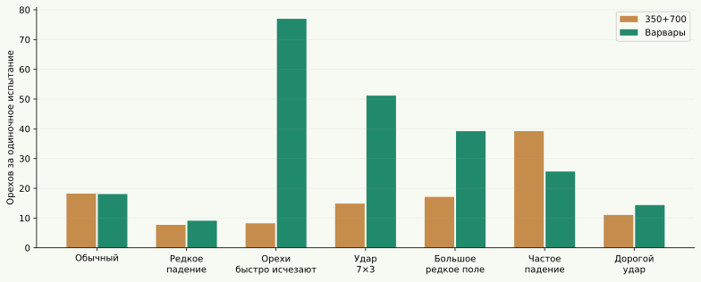
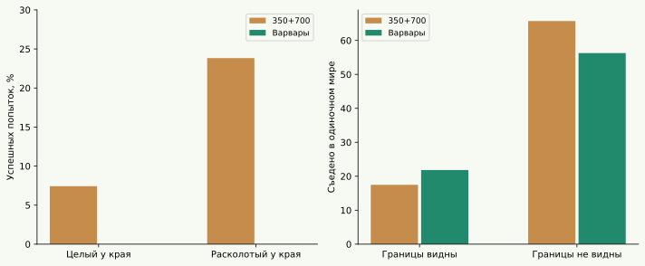
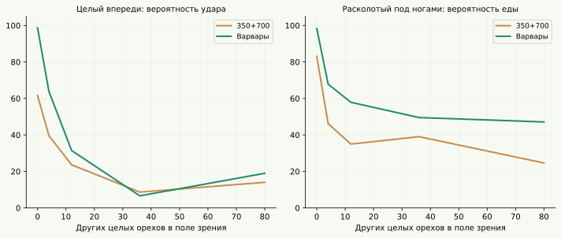

Продолжение обучения дало заметный результат
Варвары уверенно превосходят «350+700» в прямой конкуренции. Обычный мир — 8 побед из 8, дорогие удары — 8/8, короткая жизнь орехов — 8/8. Похожая картина сохраняется, когда мутации в соревновании выключены: преимущество уже присутствует в сохранённых мозгах.
Вдобавок они теперь победили основную 1,30 млн во всех восьми обычных играх, тогда как «350+700» ей проигрывали во всех восьми. Но основная 6,89 млн остаётся трудным соперником: 2 победы и 6 поражений в обычных условиях.
Реакции стали быстрее и определённее
Проверены все 175 мозгов Варваров, каждый по четыре раза на каждую задачу. Всего 2 800 испытаний; ни одной неудачи в этих четырёх простых постановках. Для «350+700» используются предыдущие проверки всех 454 мозгов, тоже по четыре повтора.
| Задача | 350+700, успехи | Варвары, успехи | 350+700, тактов до еды | Варвары, тактов до еды |
|---|---|---|---|---|
| Целый впереди | 1816/1816 | 700/700 | 4,2 | 3,0 |
| Целый под ногами | 1816/1816 | 700/700 | 14,8 | 7,3 |
| Целый справа | 1816/1816 | 700/700 | 16,1 | 19,0 |
| Целый сзади | 1816/1816 | 700/700 | 11,0 | 9,2 |
Цепочка с орехом прямо впереди выполняется почти за минимальные три такта: ударить, шагнуть, съесть. С целого ореха под собой они теперь быстрее сходят и возвращаются после раскалывания. Но не всё ускорилось: орех справа съедается в среднем немного медленнее.
Изменения видны и в вероятностях одного решения. Целый орех прямо впереди: удар 61,6% → 98,7%. Расколотый под ногами: «есть» 83,1% → 98,3%. Целый под ногами: шаг вперёд 14,1% → 99,2%. Пустое пространство: шаг вперёд 29,0% → 89,4%. Эти числа получены при одинаковой энергии 120 и возрасте 200 в изолированных сценах, по всем мозгам каждого пресета.
У Варваров меньше колебаний в таких знакомых ситуациях. Это не новая память или планирование: архитектура осталась прежней, 733 → 32 → 6, 23 686 параметров.
Где стало лучше, а где хуже

Сильные улучшения: короткая жизнь орехов 8,2 → 77,0; широкая область удара 14,9 → 51,2; большое редкое поле 64×64 с двумя деревьями 17,1 → 39,2. До конца испытания при короткой жизни пищи дожили 3,6% → 91,1%.
Потери тоже есть: при частом падении орехов добыча снизилась с 39,2 до 25,6, при очень долгой жизни орехов — с 17,4 до 13,2. Иначе говоря, новая линия не стала одинаково лучше во всех вариантах изобилия пищи.
В уточняющей серии, где изменён только срок целого ореха с 1 200 до 30 тактов, Варвары добывают 76,4 ореха против 9,0 у предшественников. Срок жизни только расколотого ореха такого скачка не даёт.
Варвары против собственных предшественников
| Условия | Побед Варваров | Поражений | Оба вымерли |
|---|---|---|---|
| Обычный | 8 | 0 | 0 |
| Редкое падение | 7 | 0 | 1 |
| Удар стоит 8 | 8 | 0 | 0 |
| Сроки орехов 30 / 15 | 8 | 0 | 0 |
| Только целые живут 30 | 8 | 0 | 0 |
| Только расколотые живут 15 | 8 | 0 | 0 |
| Орех даёт 10 энергии | 0 | 0 | 8 |
| 25% ядовитых | 6 | 0 | 2 |
| Область удара 7×3 | 8 | 0 | 0 |
| Плотный старт | 8 | 0 | 0 |
| Обычный, без мутаций | 7 | 0 | 1 |
| 30 / 15, без мутаций | 8 | 0 | 0 |
Каждая строка — четыре случайные карты, по две игры со сменой сторон. Это восемь игр, но только четыре независимых семени карты. Победитель определяется по числу живых потомков в конце 10 000 тактов.
Против остальных знакомых популяций
| Соперник | Обычный мир | Дорогой удар | Короткая жизнь орехов |
|---|---|---|---|
| 350+700 | 8 / 0 / 0 | 8 / 0 / 0 | 8 / 0 / 0 |
| 350 | 8 / 0 / 0 | 8 / 0 / 0 | 8 / 0 / 0 |
| Основная 1,30 млн | 8 / 0 / 0 | 8 / 0 / 0 | 8 / 0 / 0 |
| Основная 6,89 млн | 2 / 6 / 0 | 8 / 0 / 0 | 8 / 0 / 0 |
| Вращалка | 8 / 0 / 0 | 8 / 0 / 0 | 8 / 0 / 0 |
| Камерная 32 / 802 | 8 / 0 / 0 | 8 / 0 / 0 | 8 / 0 / 0 |
Числа: победы Варваров / поражения / взаимное вымирание. Во всех трёх сериях они победили проверенную «вращалку» и конкретную камерную семью fresh-32-802. При дорогих ударах и короткой жизни пищи выиграли все восемь игр даже у основной 6,89 млн. Это преимущество в указанных аренах, а не универсальный рейтинг всех возможных миров.
Главная старая слабость стала ещё хуже
Целый орех прямо перед носом у края карты: 7,4% → 0% успешных попыток. Уже расколотый в той же позиции: 23,8% → 0%. По 256 испытаний на каждую популяцию и постановку. Вдали от стен дальний орех съедают практически безошибочно: 98,4% → 100%.

Отключение только визуального канала границы повышает добычу Варваров с 21,8 до 56,3 ореха в уточняющей серии. У «350+700» в той же серии — 17,5 → 65,7. Значит, ошибка реакции на видимую границу сохранилась, а новые уверенные действия не сделали поведение универсальным.
В пустой сцене перед стеной Варвары чаще выбирают поворот влево, чем раньше. Но даже это не гарантирует правильной реакции, когда в картинке одновременно присутствуют граница и орех. Именно комбинации знакомых объектов остаются проблемой.
Почему меньше лежащих орехов может давать больше еды
У мозга нет входа «сколько тактов осталось жить ореху». Поэтому результат нельзя объяснить тем, что Варвары распознают срок годности. Короткий срок меняет сам мир: меньше долго лежащих орехов, другая плотность видимых объектов и другая конкуренция за них.
Чтобы проверить один из возможных механизмов, я оставил главный орех на месте и добавлял вокруг другие целые орехи. Ни стены, ни деревья, ни соседи в этой сцене не мешают.

У Варваров вероятность ударить целый орех впереди падает с 98,7% без других орехов до 6,6% при 36 дополнительных целых орехах в поле зрения. При этом вероятность «есть» составляет около 33,8%, хотя под ногами ничего нет. Даже готовый орех под ногами с таким окружением вызывает «есть» лишь примерно в половине решений.
Это показывает чувствительность к сочетаниям зрительных сигналов. Разреженная картинка действительно может помогать, но тест не доказывает, что только этим объясняются все победы при коротком сроке жизни пищи: там одновременно меняются доступность еды и взаимодействия между особями.
С ядом осторожнее, но защиты всё ещё недостаточно
В простом тесте с ядовитым расколотым орехом под ногами «350+700» съели его в 36,5% попыток, Варвары — 0 из 192. Все эти 192 Варвара пережили 300 тактов проверки.
Однако в полноценном одиночном мире с 25% ядовитых орехов 77 из 192 Варваров умерли именно от яда. До 5 000 тактов не дожил никто; остальные умерли от голода. Поэтому «иммунитета к яду» у них нет.
Дополнительный контроль: оставил яд в мире, но отключил его отдельный зрительный канал. В 384 парных испытаниях число отравлений выросло с 145 до 174, среднее наблюдаемое время жизни снизилось с 712 до 634 тактов. В этой выборке сигнал яда помогает, но его эффект намного скромнее, чем может показаться по одной простой сцене.
Что это за популяция и как сравнивали
Ты подтвердил происхождение от «350+700». В сохранении Варваров 175 разных мозгов, такт 5 586 618. Это номер такта сохранённого мира, не автоматически суммарный возраст всей линии. Ближайший старый мозг отличается в среднем на RMS 0.353 единицы веса. Различия внутри Варваров значительно меньше: около 0,035 против 0,040 внутри «350+700». Геномы заметно изменились, но точное дерево родителей в пресетах не сохранено.
Протокол и ограничения
Повторена та же батарея из 33 условий по 192 одиночных испытания, что использовалась для «350+700», и 9 уточняющих условий по 256. Те же семена карт, схема случайной выборки мозгов и ядро симуляции. Новая популяция меньше 192/256, поэтому часть мозгов повторяется на разных случайных последовательностях. Это повторные испытания одного сохранённого семейства, а не независимые эволюции.
Базовое одиночное испытание: 16×16, два дерева, падение 0,04, энергия ореха 60, расход жизни 0,25, удар 2, область 3×1, целый орех живёт 1 200 тактов, расколотый 400, максимальный возраст 10 000. Стандартный запас целых орехов при генерации сохранён. До 5 000 тактов или смерти, веса заморожены, размножение запрещено без списания его цены.
Соревнования: 32×32, восемь деревьев, обычно 16 против 16; плотный старт — 64 против 64. Предел 256 жителей, 10 000 тактов, четыре семени 1601–1604 и смена сторон. Обычные мутации 0,25 и размножение разрешены. Frozen-варианты сохраняют размножение, но отключают изменение весов. При полном вымирании переселения нет.
Главный соперник — исходный снимок «350+700» из предыдущего расследования. Дополнительно: «350», основные 1,30 и 6,89 млн, «1.3 + 3 вращалка», камерная fresh-32-802. Показатели старых популяций в одиночных задачах взяты из сохранённых результатов той же методики. Конкурентные испытания с Варварами проведены заново.
Цветные графики и средние не доказывают улучшение в любой среде. Число испытаний велико, но сравниваются конкретные сохранения одной линии. Не уравниваются суммарное время обучения, число поколений и ресурсы исходных тренировочных миров. Часть дополнительных проверок выбрана после обнаружения особенностей поведения.
Пресеты и приложение не изменены. Полные мозги остались локально; публичный архив содержит результаты испытаний и исследовательский код.